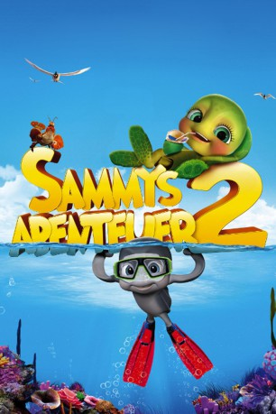
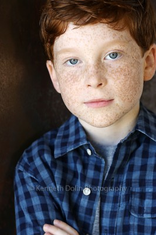
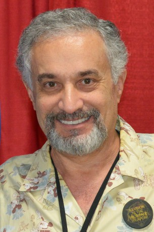
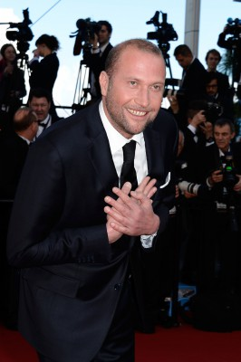
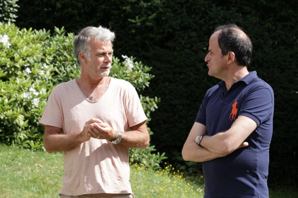
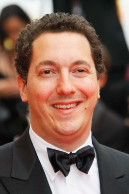
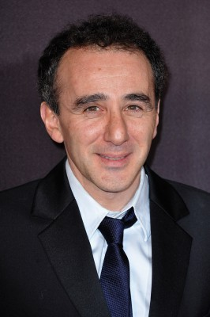

#7819 Sammys Abenteuer 2
Alternativ: A Turtle's Tale 2: Sammy's Escape from Paradise (Englischer Titel)
 
 IMDB-Wertung: 5.7 / 10
IMDB-Wertung: 5.7 / 10  Metascore: 0
Metascore: 0 
Nachdem die beiden Schildkröten Sammy und sein Freund Ray um die ganze Welt gereist sind, wollen sie endlich ihren wohlverdienten Urlaub genießen und einfach nur faulenzen. Doch ihr Ruhestand wird zunichte gemacht, als ein bösartiger Fischer beide Schildkröten einfängt und verkauft. Weit weg von Zuhause finden sich Sammy und Ray in einen Aquarium wieder. Hinter dem Glas gefangen müssen sie feststellen, dass sie zu einer Touristenattraktion geworden sind und Zuschauer belustigen sollen. Während der Gefangenschaft lernen sie den Karpfen Jimbo und den Hummer Lulu kennen. Gemeinsam schmieden sie einen genialen Fluchtplan. Auch von außerhalb rückt derweil Unterstützung an, denn die Enkelkröten Ricky und Ella sind bereits auf dem Weg zu ihnen, um eine grandiose Rettungsaktion zu starten.
Jahr: 2012
Dauer: 92 Minuten
FSK: 0
Land: Belgien Studio: StudioCanalTonspuren:
Untertitel: Deutsch,
Auflösung: 1080p (1920x1080) Größe: 7198 MB
Genre: Abenteuer, Animation/Trick, Familie
Regisseur: Vincent Kesteloot, Ben Stassen, Mimi Maynard
Drehbuch: Domonic Paris
Soundtrack: Ramin Djawadi
Darsteller:
- Alan Shearman als Sammy
- Cinda Adams als Veterinarian
- Dino Andrade als Manuel Hogfish
- Brianne Brozey als Prince 3
- Darren Capozzi als Tremaine
- Terri Douglas als Little Fish
 Elisa Gabrielli als Female Patron
Elisa Gabrielli als Female Patron-  Carter Hastings als Ricky
- Kyle Hebert als Seagull 2
 Lex Lang als Big Frenchman
Lex Lang als Big Frenchman Michael McConnohie als Security Guard
Michael McConnohie als Security Guard- Cassidy Naber als Prince 2
- Shyloh Oostwald als Ella
-  Doug Stone als Hammerhead Shark
- Chris Andrew Ciulla als Russian Snowcrab
-  François Damiens als Philippe
- Ellen Dubin als Doris
-  Franck Dubosc als Sammy
-  Guillaume Gallienne als Lulu la moustache
- Guillaume Lebon als Klakson
- Silje Reinåmo als Several voices
- Olivia Ruiz als Shelly
- Patrick Seitz als Toots
-  Elie Semoun als Ray
 Joe Thomas als Lulu the Lobster
Joe Thomas als Lulu the Lobster- Thomas Lee als Ray
- Mari Devon als American Woman
- Carlos McCullers II als Ray
- Mario Anthony als Fisherman 2 - Jamaican
- George Babbit als Diver
- Deanne Basque als Mother Octopus
- Jon Ferrante als Crab
- Michael Goldstein als Moray Eel Marco
- Matt Hart als Ray Fish 2
- Pam Jones als Hostess
- Clark Kelly als Seagull 1
- Camille Labadie als Baby Octopus Annabel
- Sirap Mod als Fisherman Large
- Millie Mup als Shelly
- Damien Paris als Male Patron
- Donte Paris als Young Penguin 1
- Bill Parks als Jimbo
- Michael Philip als Jail Fish Jax
- Roxanne Reese als Rita
- Dylan Shepherd als Prince 1
- Jack Shepherd als Hatchling Opening
- Michael Sun Lee als Japanese Fisherman
- Cameron Thomas als American Boy
- Lauren Valente als Tang Fish
- Jaylen Ahmadyar als Ray Fish 1
Datei: X:\Kinder Collections\Sammys Abenteuer\Sammys Abenteuer 2 (2012, FSK0, 1920x1080).mkv seit 20.12.2017
Festplatte: Kinder-Filme+Trick
 Es gibt insgesamt 7 Filme in der Gruppe 'Kinder Collections\Sammys Abenteuer'
Es gibt insgesamt 7 Filme in der Gruppe 'Kinder Collections\Sammys Abenteuer'